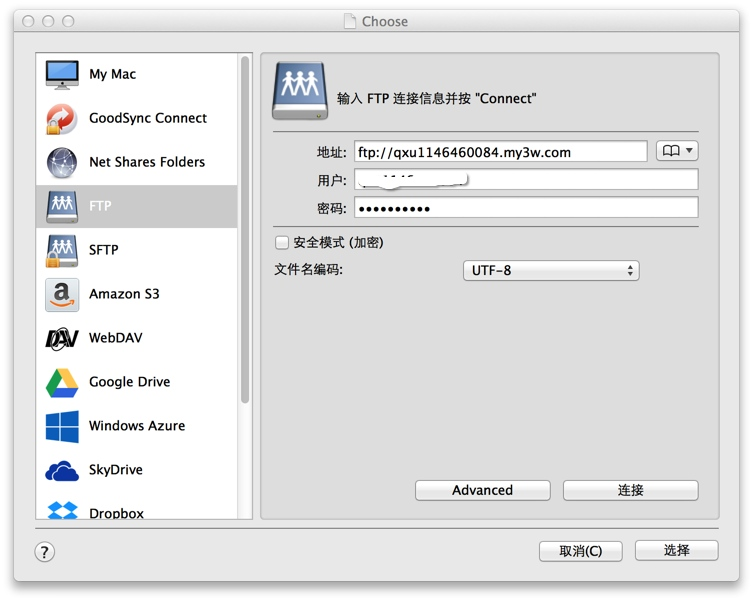
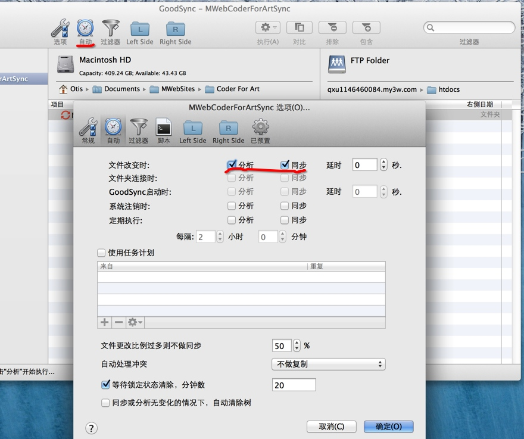

使用GoodSync把MWeb生成的静态网站自动同步到FTP、SFTP、WebDAV、Amazon S3等
之前有写过如何用ForkLift这样的FTP软件自带的同步功能传到FTP，但是还是有点麻烦，昨天发现了一个非常好的软件GoodSync，它有非常强大的同步功能，而且还免费！
下载并安装GoodSync
去这个网址：http://www.goodsync.com/ 免费下载GoodSync并安装。安装时要选择是否设置GoodSync Connect时，我选择是否：Do not setup GoodSync Connect。完成后点新建任务，就会新增一个同步任务。
选择要同步的文件夹
在左侧选择MWeb生成的静态网站所在的文件夹。如果您没有设置MWeb生成的静态网站的文件夹，默认在：
file:///Users/您的帐号/Library/Containers/com.coderforart.MWeb/Data/Documents/MWeb/LocalData/Site
这个位置，在GoodSync的选择位置的窗口中勾选：Show hidden Files/Floders 才能找到这个位置。
选择要同步的目标位置
在右侧选择要同步的目标位置，我这里选择FTP，如下图，可以看到GoodSync还支持SFTP、WebDAV、Amazon S3等非常多的同步服务。

点“连接”按钮，连上FTP后，选择FTP上要同步的文件夹，再点“选择”按钮。如果有跳出来提示，点“Yes”。
设置自动同步
如下图：点“自动”按钮，设置当文件改变时就分析和同步。

点“确定”后就会开始分析和同步了。
之后当您每一次用MWeb “Build Site”时，如果有打开GoodSync，它就会自动同步了，非常方便，比Github还方便！
总结
GoodSync的功能还有很多，比如说同步到SFTP、WebDAV、Amazon S3等等，非常强大而且还免费。
因为有GoodSync这个同步软件，MWeb变得更方便好用了。我现在也在考虑是否把CoderForArt搬到有FTP功能的主机，这样在国内访问会快很多，写新文章时也不用打github命令手动去上传了。然后本来是有考虑为MWeb加上自动同步功能或者另做一软件，现在看来也没有必要了。
更新：GoodSync 免费版是有限定的，限定为：
Q: What are free version limitations?
A: You can have 3 or less jobs in free version and 100 or less files and folders in each job.
虽然GoodSync不免费，但是非常好用。我也会关注是否有其他同步软件。